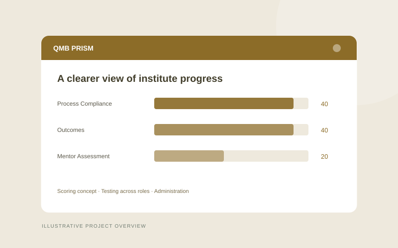

QMB PRISM
Contributing institutional-data requirements, a management-focused scoring concept, and testing across the QIC coordinator, mentor and administrator roles.
(Deemed University)

The purpose
QMB PRISM connects quarterly QIC meetings, institutional and research data, improvement actions and quality scores. The portal was developed by Dr. Dharmendra Pandey, Director, Quality Management & Benchmarking.
Suggested inclusion of institutional and research data and proposed a marking system to help management monitor institute progress. Tested the complete workflow in coordinator, mentor and administrator roles. Currently handle portal corrections and user queries as an administrator.
How the work comes together.
Define data needs
Recommended institutional and research information alongside meeting records.
Propose scoring
Suggested the marking-system concept to give management a structured view of institute progress. Detailed formulas and weights belong to the portal design.
Test coordination
Created meetings, locked agendas and prepared Minutes of Meeting as an institute QIC coordinator.
Test mentor review
Reviewed submissions and tested marking as a QMB Quality Mentor.
Test administration
Continued through the administrator workflow to check the process across roles.
Support ongoing use
Currently administer the portal and handle correction requests and user queries.
What this supports
Connected reporting requirements and management needs with practical workflow testing and continued user support.
See the workflow.
Illustrated demonstration with narration and English captions. Confidential records are excluded; any sample data is fictional.
Read the walkthrough transcript
QMB PRISM: supporting institutional improvement
QMB PRISM is the Platform for Review, Improvement and Strategic Monitoring at Symbiosis International University. Developed by Doctor Dharmendra Pandey, it connects quarterly QIC meetings, institutional data, action tracking, and quality scores. My contribution was suggesting institutional and research data, proposing the marking-system concept, and testing the workflow across user roles. I currently administer the portal and handle correction requests and user queries.
Testing the workflow across three roles
I tested the portal by following the workflow as an institute QIC coordinator, then a Quality Mentor, and then an administrator. This included creating meetings, locking the agenda, preparing Minutes of Meeting, reviewing the submission, and testing mentor marking. Moving through these roles let me check the workflow as different users would experience it, including the handover from institute coordination to QMB review.
Bringing institutional data into the review
I suggested including institutional data and research information in the portal. The documented system collects quarterly figures covering faculty and students, research output, sponsored projects, and placements. Designated research fields are supplied centrally by SCRI. This puts supporting institutional information alongside the meeting and review process. My contribution was the requirements suggestion; the portal implementation was handled by the developer.
A scoring concept for management visibility
I proposed introducing a marking system because it would help management see how institutes were progressing. The documented portal uses a quarterly quality score with forty points for process compliance, forty for outcomes, and twenty for the Quality Mentor assessment, with additional rules for exceptions and bonuses. My contribution was proposing the scoring concept. I do not claim authorship of the detailed criteria, formulas, or weights.
Supporting the portal in daily use
I currently handle the portal as an administrator, responding to corrections and queries. My testing experience across coordinator, mentor, and admin roles helps me understand the user journey. The wider portal supports meeting records, mentor review, action follow-up, and progress reporting. My ongoing contribution is operational administration and user support, alongside the requirements input and testing already described.
My role in the project
This project demonstrates my contribution to defining institutional reporting needs, proposing a management-oriented scoring concept, testing a multi-role workflow, and supporting a portal in daily use. Development credit remains with Doctor Dharmendra Pandey. My role is represented as a requirements contributor, functional tester, and current portal administrator. Illustrations in this case study do not reproduce confidential institutional records.
Take a closer look.
5-page case study · PDF